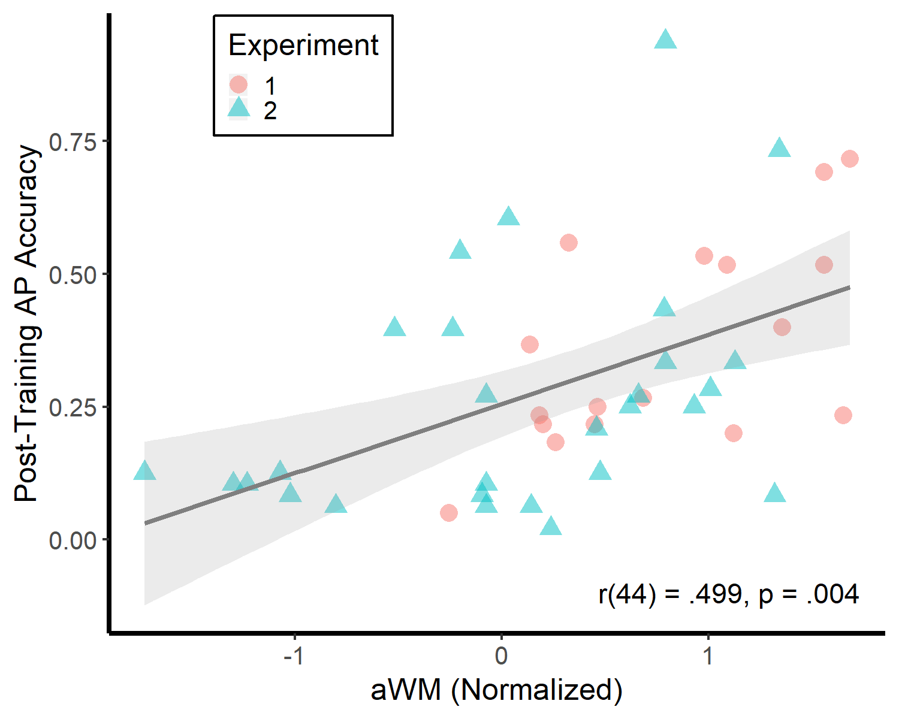
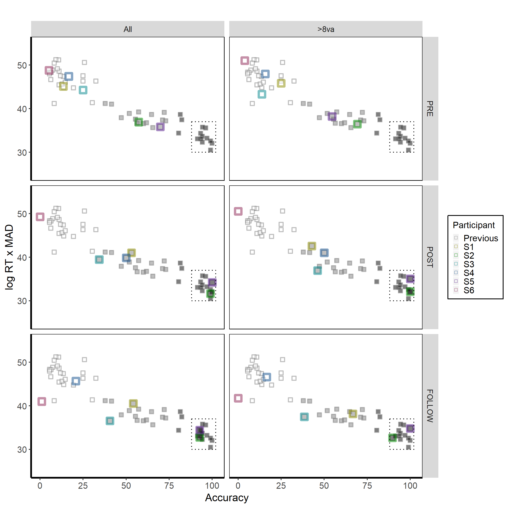

My research has demonstrated that AP acquisition in adulthood is possible, at least for some individuals with exceptional auditory memory abilities. In a study published in Cognition, my co-authors and I demonstrated that AP could be trained, to an extent, in an adult population, and moreover individual differences in learning were predicted by auditory working memory (see Fig.1).
Fig.1: Data adapted from Van Hedger et al. (2015) demonstrates that auditory working memory – using a pitch reproduction task in Experiment 1 and an auditory n-back task in Experiment 2 – significantly relates to individual differences in absolute pitch learning.
We have extended this work in a paper that is currently under review and available as a preprint on bioRxiv. Using a long-term (eight-week) training paradigm, we demonstrate that some high-working-memory individuals are able to perform with sufficient speed and accuracy so as to be statistically indistinguishable from "genuine" AP possessors. Interestingly, however, the successful learners in this work could be differentiated from the other participants even before training had commenced, even if they were not performing with sufficient speed and accuracy to be considered AP possessors (see Fig.2). This pattern of results thus suggests that AP may be learnable by only some post-critical period adults. Identifying more of these individuals may help advance our understanding of environmental and genetic components to absolute pitch acquisition. Taken together, these findings help situate AP in a larger body of research on how cognitive abilities such as working memory relate to perceptual category learning.
Fig.2: Depiction of six participants who completed an eight-week AP training program. Accuracy (percent of notes correctly identified) is represented on the x-axis, while a composite measure that incorporates response time and the mean absolute deviation from the correct note is represented on the y-axis. Prior to training (A), Participants S2 and S5 displayed note classification performance that could be considered "pseudo AP" (below typical thresholds for AP but clearly above chance). Immediately after the eight-week training program (B), Participants S2 and S5 were virtually perfect in classifying notes across several octaves and instrumental timbres and were statistically indistinguishable from a group of “genuine” AP possessors. This level of performance persisted four months post-training (C).